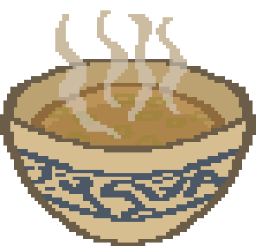

- Site Launch!
- Alpha released privately on Steam.
Sip Sip Soup
Updates

People
---> The Team
Noemi: Developer, Artist, and Owner of Sip Sip Soup!
Kati: Lead Artist and Animator. Will make a better website than Noemi could when she has time!
---> Special Thanks
Darren and Lia: Members of the original team, from back when Ratacombs was a school project. They stayed to help out a bit after the semester ended, and still periodically meet to give feedback and keep up with what's going on :). Lia is partially responsible for the loading screen and the current capsule art. Darren added some parts of the shaders as well as some awesome sound effects.
---> Contact
noemi@sipsipsoup.com